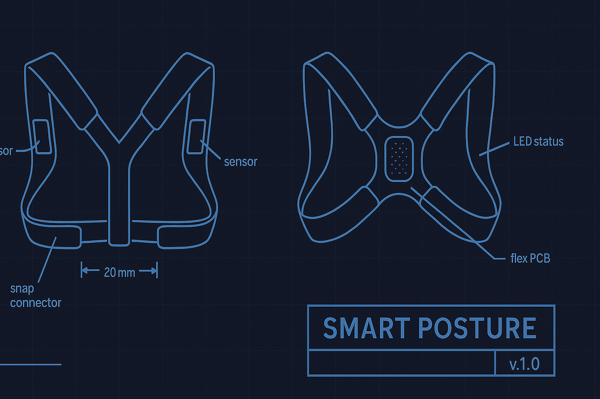
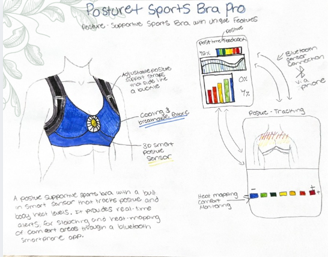
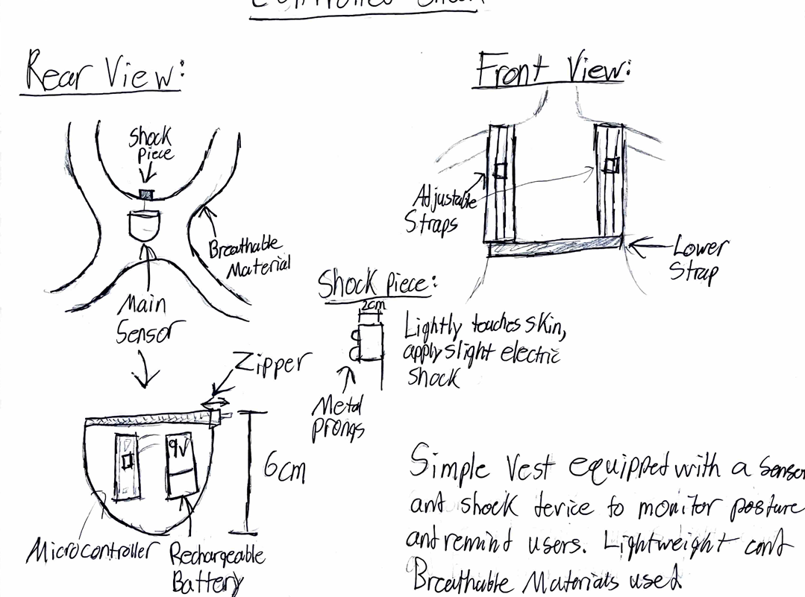
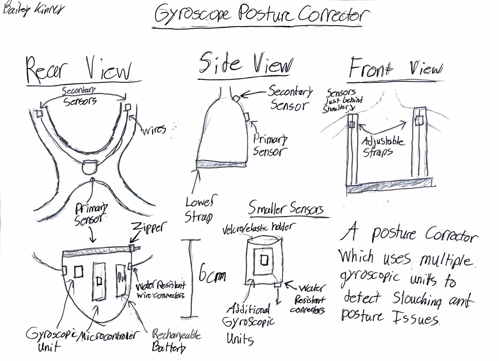
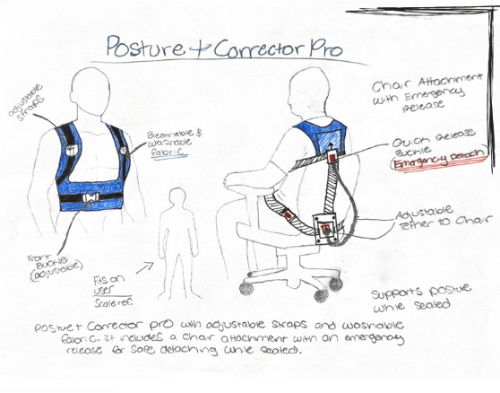
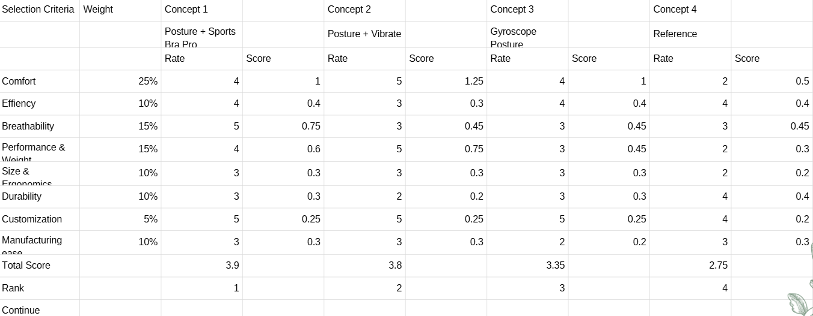
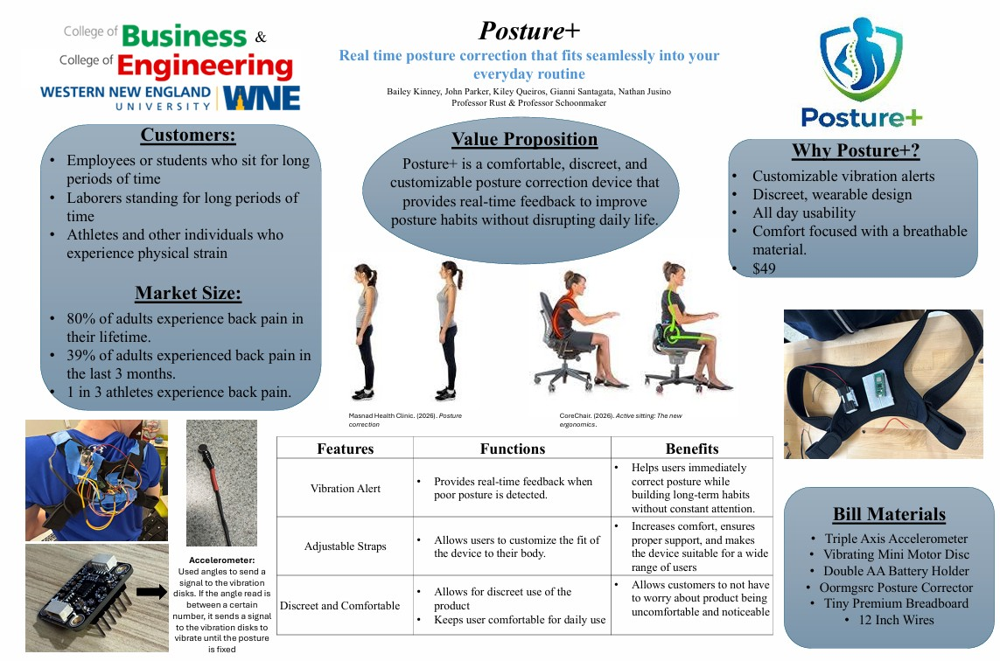

A wearable posture-sensing prototype that compares accelerometer readings from two points on the back and gives vibration feedback when it detects slouching. Built with a cross-functional team of business and engineering students.

Poor posture is a common problem for office workers, students, and seniors who spend long hours seated, and it's easy to fall back into old habits without a reminder. The goal was a wearable that could tell the difference between an actual slouch and normal movement, then give immediate physical feedback instead of relying on the wearer to notice.
The team sketched four directions before picking one to build. Each was scored against weighted criteria — comfort, efficiency, breathability, performance, size, durability, customization, and ease of manufacturing.





The Sports Bra Pro concept scored highest overall, but the gyroscope-based sensing approach — strong on customization and comfort — became the technical foundation we actually built and tested.
Ran a 15-person customer survey to check feature priorities and expectations before committing to a build.
Built the wearable around a Raspberry Pi Pico 2W with dual ADXL345 accelerometers over I2C — one sensor on the upper back, one on the lower back — to compare orientation between the two points.
Wrote about 200 lines of MicroPython to clean the raw accelerometer data: a median-3 filter, outlier rejection, and an IIR low-pass filter, feeding into a fixed angle-difference condition with handling for bent-over posture to reduce false alerts.
Configured and placed the sensors, wired the full system, soldered everything except the direct sensor connections, and helped assemble the wearable prototype.
Informal testing showed the sensing and vibration concept could work, but the short development schedule left real sensor-placement and reliability issues. An early ~90% figure came up during testing, but it was an informal observation from a handful of runs, not a controlled accuracy measurement — worth being upfront about rather than presenting it as a validated result.
Next iteration: improve sensor placement and mounting stability, tighten wiring reliability, define an actual test protocol, and better separate slouching from bending and normal movement.
Presented the prototype and concept alongside the team's business proposal — customer research, value proposition, and bill of materials.
